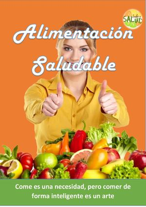

Welcome to
saludable | Definición | Diccionario de la lengua española | RAE - ASALE
2021.06.02 14:34Diccionario de la lengua española Edición del Tricentenario Actualización 2020 RAE.es Recursos UNIDRAE Consultas lingüísticas Gramática Ortografía Corpes XXI NDHE Archivo Boletines Consulta posible gracias al compromiso con la cultura de la saludable
1. adj. Que sirve para conservar o restablecer la salud corporal .
2. adj. De buena salud , de aspecto sano .
3. adj. Provechoso para un fin , particularmente para el bien del alma .
Real Academia Española © Todos los derechos reservados
Descubra la nueva plataformade recursos lingüísticos de la RAE Edición del Tricentenario Guía de consulta Modo de cita UNIDRAE Consultas lingüísticas Actualización 2020
Palabra del día
menino, na
miércoles, 2 de junio de 2021
Tuits de @RAEinforma
Diccionario del estudiante
DLE descargable
Diccionario del español jurídico
Obras académicas
Biblioteca Clásica
Fundación
El Diccionario de la lengua española es la obra lexicográfica de referencia de la Academia.
La vigesimotercera edición, publicada en octubre de 2014 como colofón de las conmemoraciones del tricentenario de la Academia, es fruto de la colaboración de las veintidós corporaciones integradas en la Asociación de Academias de la Lengua Española (ASALE).
Presentación Cómo se hace el Diccionario La 23.ª edición (2014) Preámbulo La vigesimotercera edición Artículos de muestra Advertencias Abreviaturas y signos empleados El Diccionario en el BRAE RAE.es Recursos UNIDRAE Consultas lingüísticas Gramática Ortografía CORPES XXI NDHE Archivo Boletines Facebook Twitter YouTube Flickr Instagram © Real Academia Española , 2021 .Felipe IV, 4 - 28014 Madrid - Teléfono: (34) 914201478 Política de privacidad - Política de cookies - Aviso legal - Contacto
